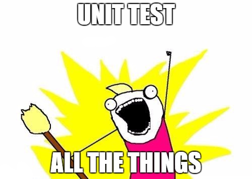
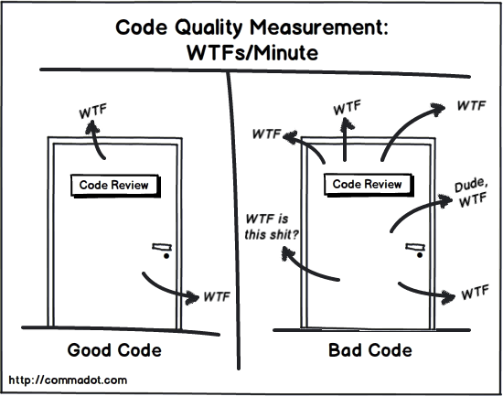

A bunch of dangerously unprepared astronauts land on a strange planet only to find out it’s inhabited by big fat angry aliens with guns. The whole crew is taken prisoner except our main character who has to rescue them all and get the hell out of that planet. Problem is he’s unarmed and will have to sneak his way through
A few of our references.
Abbes oddysee 2
Abbes oddysee
Analisis thiswarofmine 03
Boogerman 02
Boogerman 04
This war of mine 6
Want to follow our progress?
We"ll be working on GitHub and using its issue tracker to manage tasks.
This holiday season you can buy Libgdx Cross-platform Game Development Cookbook just for what a beer would set you back! It’s either £4, $6 or 5€ until January 6th. So, do you liver a favour, don’t down that extra pint and learn Libgdx! Remember we keep our samples up to date with the latest Libgdx releases on GitHub.
Shortly after we moved Ashley into the Libgdx family, we started writing unit tests for every single component in the framework using jUnit.
Unit testing goodness
That was over a year and a half ago and it has proven to be a huge win for many reasons.
Issue reporters can (and should) include a test that breaks as a way of explaining the problem. We can then easily include it into the suite, fix it and prevent future regressions.
Pull requests trigger a build in Jenkins that compiles the code and runs all the unit tests. Code reviews should check for design, good practices as well as correctness. However, as long as the tests have good coverage, we can be pretty sure the change won’t break existing code.
Since, it is mandatory to include extensive unit tests with each new feature, we can increase quality from the get go.
Refactoring becomes a lot easier. We lose fear of cleaning up ugly parts of the codebase because we have unit tests to make sure the behaviour remains the same. This became evident with the recent Engine internal refactor.
The morale is basically as follows.

Our issue tracker proves that we’re far from perfect, which makes me thing about where we’d be if it weren’t for unit tests. Ashley inherently has lots of tricky bits of logic and potential edge cases. Making sure we don’t break anything without automated tests would almost impossible.
That is why, every time we break something, we add a unit test with the fix and make sure it never ever happens again.
Lack of unit testing in the games industry
When I left the games industry as a full time occupation something struck me. There’s an incredibly poor unit testing culture in games compared to other industries. Sure, other industries are also affected by this disease but I’ve felt a lack of attitude in the games world to change the situation.
This is really, really bad.
As you surely know, games are complex pieces of code. Many systems with non-trivial logic interact in a real-time simulation all at once. Games development is hard! Actually, it’s more than that! It’s brain melting!
When a deadline approaches and the bug count shoots over the roof, we put in hacky fixes and hope for the best. Then our WTFs per line increase and no one ever dares to fix it because they’re scared of breaking everything. So we keep pushing forward until the game’s unavoidably collapses on us.

Some people may say that decoupling and correctly abstracting code for it to be more easily testable may add an overhead games cannot afford. I would tell them that’s a huge empty fallacy until proven otherwise and quite possibly fall within premature optimisation. These claims need to be backed by profiling data and I seriously doubt these practices will become someone’s main bottleneck.
Clean and performant code is possible.
We can do better than this
Admittedly, games are very hard to test. How can you unit test a shader or a behaviour script? Many things depend on graphics or user input and we cannot automate them!
Write tests for game specific logic that does not depend on graphics nor user input.
Make sure you have a headless backend for your engine, that way you can run it without requiring a graphic environment.
Use dependency injection, so you can mock those dependencies in a unit test. Don’t have your Player internally use a PlayerController, give it a reference to ControllerInterface in the constructor. This way you can test Player behaves well without relying on an actual keyboard.
Higher level systems can be really tricky to test, especially if they’re strongly tied to user input. In those situations, you can write an integration test that fakes user input and validate the output.
Designing your game to be unit testable is hard and may take longer but think about it as an investment. In the long run, you will face less roadblocks and will be able to iterate faster. No need to do this for a game jam prototype although I would certainly recommend it for a more serious project.
It’s undeniable that writing unit tests is time consuming but I strongly believe the games industry completely underestimate their usefulness.
To use it, change your dependency to com.badlogicgames.gdx:ashley:1.7.0.
The new nightly dependency is com.badlogicgames.gdx:ashley:1.7.1-SNAPSHOT.
Next, I am going to be focusing on code quality and maintainability. Particularly, try
and split Engine internally into smaller
logical components whilst keeping the API intact.
As usual, all unit tests are passing
and the wiki is up to date. Please keep up the good work sending more pull
requests and reporting bugs!
Update: the list of winners is available as a public draw.
Congratulations and thanks for the support! The Libgdx Cookbook discount will
continue until September the 30th. If you help us spread the word by retweeting
the following message, you"ll have a chance of getting one of the three free
digital copies of the book we"ll be giving away.
Libgdx Cookbook is 50% off, use the code: "LCPGDC50" and RT to enter a raffle for 3 digital copies of the book. Level up your Libgdx skills!